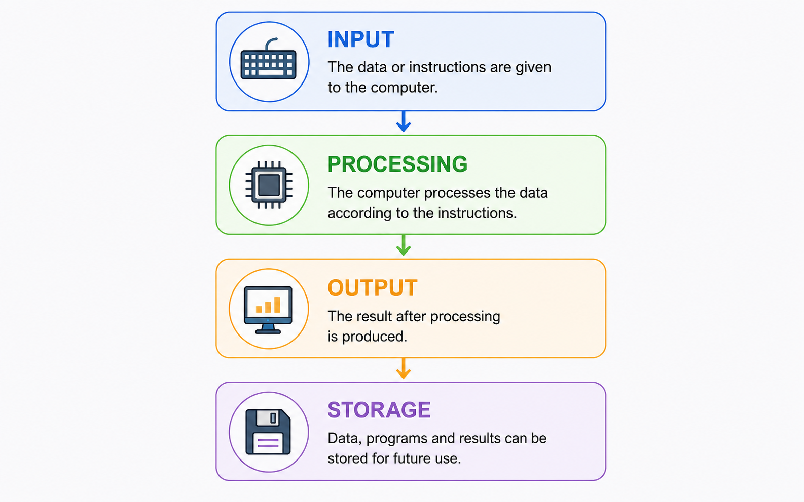
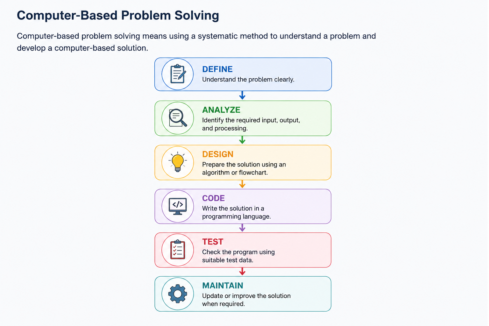

A computer is a programmable electronic device that accepts raw data as input, processes it according to a set of stored instructions, produces useful information as output, and can store the results for future use.
A computer is a programmable electronic device that accepts raw data as input, processes it according to a set of stored instructions, produces useful information as output, and can store the results for future use.
A computer takes input, works on that data, gives us an output, and can store the result.
A computer is an electronic device used to process data. It works according to instructions given through a program. It can perform arithmetic and logical operations quickly and accurately.
Modern computers are programmable and can be used for many different types of work. They are not limited to calculations; they can also store information, communicate with other devices, and run different applications.
The basic working of a computer can be understood through four main stages: Input, Processing, Output, and Storage.

Input is the data or instructions given to the computer. Devices such as a keyboard and mouse are commonly used to provide input.
After receiving the input, the computer processes the data according to the instructions provided by the program.
The result obtained after processing is called output. The result may be displayed on a monitor, printed on paper, or produced through another output device.
Data, programs, and results can be stored so that they can be used later.
A computer first receives data as Input, processes it, produces the Output, and stores the data or result for future use.
Computers have several characteristics that make them useful for solving problems and performing different tasks.
A computer can perform a very large number of operations in a short period of time.
A computer can give highly accurate results when the input and program instructions are correct.
A computer does not become tired or lose concentration. It can perform the same task repeatedly without getting tired.
A computer can be used for many different activities such as calculations, programming, designing, communication, and data processing.
A computer can store a large amount of data and information for future use.
Once a program or task is started with the required instructions, the computer can perform the operations automatically.
Computers have developed gradually from simple calculating devices into modern electronic and programmable machines.
| Device / Development | Important Point |
|---|---|
| Abacus | An early manual calculating device. |
| Pascaline | A mechanical calculator developed by Blaise Pascal. |
| Analytical Engine | Charles Babbage's important general-purpose computer concept. |
| ENIAC | An early electronic general-purpose computer. |
| Microprocessor | Microprocessor-based systems helped in the development of modern personal computers. |
Computers are commonly divided into generations according to the major technology used in their development.
| Generation | Main Technology | Example |
|---|---|---|
| First Generation | Vacuum Tubes | ENIAC, UNIVAC |
| Second Generation | Transistors | IBM 1401 |
| Third Generation | Integrated Circuits (ICs) | IBM 360 |
| Fourth Generation | Microprocessors | Personal Computers |
| Fifth Generation | AI and advanced processing technologies | AI and robotics-oriented systems |
Computers can be classified in different ways depending on their size, purpose, and working principle.
Computers are used in almost every field of modern life.
| Advantages | Limitations |
|---|---|
| High speed | No human-like intelligence |
| High accuracy when input and instructions are correct | Depends on programs and correct input |
| Large storage capacity | Requires electrical power |
| Continuous working without fatigue | Follows the GIGO principle |
| Automation and versatility | Improper use may create health and social concerns |
Computers have become an important part of modern society. They are used in communication, healthcare, education, governance, entertainment, science, banking, and many other areas.
Digital services, online education, communication platforms, medical systems, research, and many everyday activities depend on computer technology.
Modern computing is developing rapidly. Important trends mentioned in the study material include:

Before writing a program, first understand the problem, decide the solution, write the code, test it, and improve it when required.
Before writing a program, first understand the problem, decide the solution, and then write and test the code.
After reading the topic, watch an easy introductory lecture to strengthen your understanding.
A short handwritten-style revision sheet for this topic will be provided here.
Use the mind map for quick revision before class tests and examinations.
A computer system is made up of several important components that work together to accept data, process it, store it, and produce useful information.
A computer system is not just a CPU. Input devices, CPU, memory, storage, and output devices all work together to complete a task.
A computer system has four main functional components: Input Unit, Central Processing Unit (CPU), Memory Unit, and Output Unit.
| Component | Main Function |
|---|---|
| Input Unit | Accepts data and instructions from the user. |
| CPU | Processes data and controls the operations of the computer. |
| Memory Unit | Stores data, instructions, and results. |
| Output Unit | Presents the processed information to the user. |
The Input Unit is used to enter data and instructions into the computer. It receives information from the user and sends it to the computer for processing.
Input devices convert user-provided information into a form that the computer system can process.
Input means giving data to the computer. For example, when you type your name using a keyboard, the keyboard provides input to the computer.
| Device | Input Type | Common Use |
|---|---|---|
| Keyboard | Text and commands | Typing and coding |
| Mouse | Pointing | GUI interaction |
| Scanner | Images and documents | Digitization |
| Microphone | Audio | Voice input |
| Webcam | Video | Video calls and recording |
The Central Processing Unit (CPU) is the main processing unit of a computer. It executes instructions and controls the operations of the computer system.
The CPU fetches instructions from memory, decodes them, performs the required operation, and stores the result.
The CPU is often called the brain of the computer because it performs processing and controls the main operations of the system.
The CPU mainly consists of:
The Arithmetic Logic Unit (ALU) is the part of the CPU responsible for arithmetic and logical operations.
| Type | Operations |
|---|---|
| Arithmetic | Addition, Subtraction, Multiplication, Division |
| Logical | AND, OR, NOT, XOR, Comparison |
The ALU performs calculations and logical comparisons. For example, when the computer calculates 5 + 7 = 12, the arithmetic operation is performed by the ALU.
The Control Unit (CU) manages and coordinates the activities of the computer. It controls the flow of data and instructions between the CPU, memory, and input/output devices.
The Control Unit fetches instructions from memory, decodes them, and generates the required control signals for their execution.
The Control Unit controls and coordinates computer operations. It does not perform the actual arithmetic calculations itself.
The Memory Unit stores data, instructions, and results required by the computer. It provides information to the CPU during processing and stores results when required.
Computer memory is organized into different levels according to speed, size, and cost.
Memory is the computer's storage area for the data and instructions that are being used or saved.
Primary Memory, also called Main Memory, is directly accessed by the CPU. It stores programs and data that are currently being used by the computer.
Important types of primary memory include RAM, ROM, and cache memory.
| Type | Volatile | Main Use |
|---|---|---|
| RAM | Yes | Stores currently running programs and data |
| ROM | No | Stores firmware and boot-related instructions |
| Cache | Yes | Provides faster access to frequently needed data |
RAM is temporary, read/write memory used to store the data and programs currently required by the computer.
RAM is volatile, which means the stored data is lost when the power is turned off.
ROM is non-volatile memory that retains its contents even when the computer is switched off. It is used for firmware and boot-related instructions.
Cache is a high-speed memory located close to or inside the CPU. It helps reduce the time required to access frequently used data.
Secondary storage provides permanent, non-volatile storage for programs, data, and other files.
Compared with primary memory, secondary storage generally provides larger capacity and is slower to access.
| Storage Device | Type | Important Point |
|---|---|---|
| HDD | Magnetic | Large capacity, mechanical storage |
| SSD | Flash | Faster storage with no moving mechanical parts |
| Pen Drive | Flash | Portable storage device |
| CD/DVD | Optical | Optical storage media |
Registers are very small and very fast storage locations inside the CPU. They temporarily hold data, instructions, addresses, and intermediate results during processing.
| Register | Purpose |
|---|---|
| PC — Program Counter | Holds the address of the next instruction. |
| IR — Instruction Register | Holds the current instruction. |
| ACC — Accumulator | Stores results produced by ALU operations. |
| MAR — Memory Address Register | Holds the memory address being accessed. |
| MDR — Memory Data Register | Holds data being transferred to or from memory. |
Registers are among the fastest storage locations in the computer and are located inside the CPU.
The Output Unit presents the processed information to the user in a form that can be understood by humans.
| Device | Output | Copy Type |
|---|---|---|
| Monitor | Text, graphics, video | Soft Copy |
| Printer | Text and images | Hard Copy |
| Speakers | Sound and music | Soft Copy |
| Projector | Large-screen display | Soft Copy |
The Data Processing Cycle describes the basic sequence followed by the CPU while processing an instruction.
The IPO model explains how a computer receives data, processes it, and produces useful information. Memory supports the processing by storing data and instructions.
| Stage | Action |
|---|---|
| Input | Enter 5 and 7 using the keyboard. |
| Process | CPU/ALU performs 5 + 7 = 12. |
| Output | Display 12 on the monitor. |
| Storage | Data and result can be stored in memory. |
Hardware organization describes how the different hardware components of a computer are connected and communicate with each other.
The main communication path between CPU, memory, and input/output devices is the system bus.
| Bus | Function |
|---|---|
| Data Bus | Carries data between computer components. |
| Address Bus | Carries memory or I/O addresses. |
| Control Bus | Carries control and timing signals. |
Think of the system bus as a communication pathway that allows different parts of the computer to exchange information.
The different components of a computer work together during processing. Input devices provide data, memory holds data and instructions, the CPU processes them, and output devices present the result.
The Control Unit coordinates the flow of information between the different units. Buses carry data, addresses, and control signals.
Computer memory is organized according to speed, size, and cost. Faster memory is generally smaller and placed closer to the CPU.
| Level | Typical Characteristic |
|---|---|
| Registers | Very fast and located inside the CPU. |
| Cache | Very fast memory used to reduce access time. |
| RAM | Main working memory for active programs and data. |
| SSD | Non-volatile secondary storage. |
| HDD | High-capacity magnetic secondary storage. |
The performance of a computer system depends on several hardware and software factors.
| Component | Remember This |
|---|---|
| Input Unit | Accepts data and instructions. |
| CPU | Processes instructions and controls operations. |
| ALU | Performs arithmetic and logical operations. |
| Control Unit | Controls and coordinates operations. |
| Memory | Stores data, instructions, and results. |
| Registers | Very fast temporary storage inside CPU. |
| Output Unit | Presents processed information. |
| Storage | Provides long-term data storage. |
Remember the basic flow: Input → Processing → Output, while Memory and Storage support the process.
After reading the topic, watch this easy explanation of computer components, CPU, memory, input and output devices.
A short handwritten-style revision sheet covering the major components of a computer system will be provided here.
Use the mind map for quick revision of Input Unit, CPU, Memory, Storage and Output Unit.